1. Транзистор — кран для тока
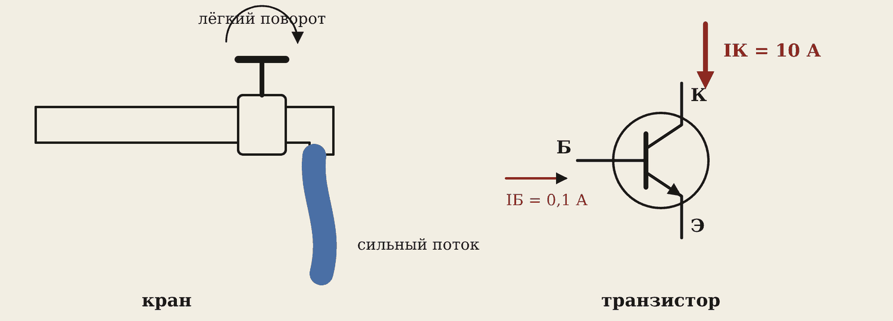
Транзистор — полупроводниковый прибор, в котором маленький ток или напряжение управляет большим током. Как кран: лёгким поворотом ручки вы управляете сильным потоком воды.
У транзистора три вывода. Маленький ток в один из них открывает большой ток через два других. Например, ток базы 0,1 А управляет током коллектора 10 А — в 100 раз больше.
Запомните
Транзистор не создаёт энергию. Большой ток он берёт от источника питания и только управляет им — как кран не создаёт воду.
2. Виды транзисторов
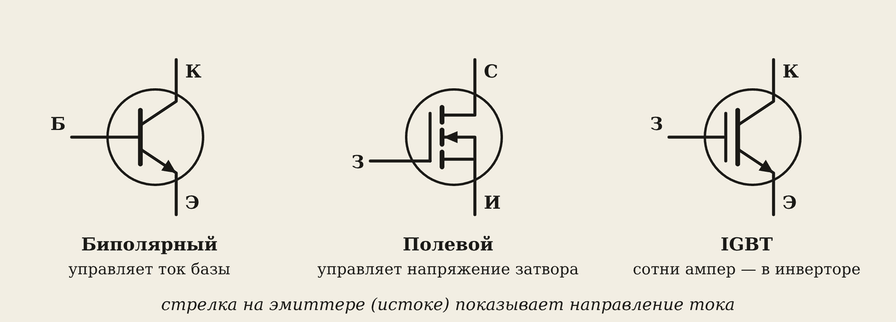
| Вид | Выводы | Чем управляют | Где |
|---|---|---|---|
| Биполярный | база, коллектор, эмиттер | током базы | усилители, ключи |
| Полевой | затвор, сток, исток | напряжением на затворе | блоки питания, телефоны |
| IGBT | затвор, коллектор, эмиттер | напряжением; держит сотни ампер | сварочные инверторы |
Стрелка на эмиттере (истоке) показывает, куда течёт ток.
3. Режим ключа
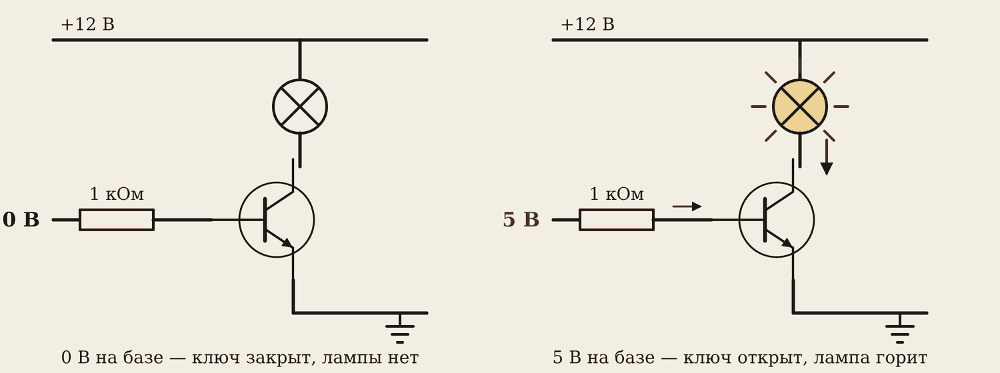
В режиме ключа транзистор либо полностью открыт, либо закрыт — как выключатель, только без движущихся частей. Он может переключаться десятки тысяч раз в секунду и не изнашивается.
Плата Ардуино даёт со своего вывода всего около 20 мА — лампу на 12 В она не потянет. А через транзистор — легко: 5 В на базе открывают ключ, и лампа горит.
Почему ключ выгоден: в закрытом состоянии тока нет — нагрева нет. В открытом на транзисторе почти нет напряжения — нагрева почти нет. Транзистор сильно греется, только когда он «приоткрыт». Поэтому в инверторе транзисторы работают только ключами.
4. Режим усилителя
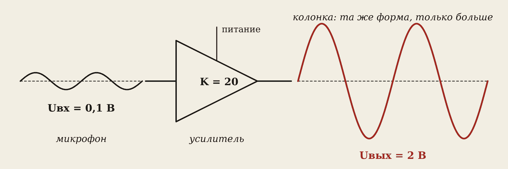
В режиме усилителя выходной сигнал повторяет входной, но он больше. Во сколько раз — показывает коэффициент усиления:
K = Uвых / Uвх
Микрофон даёт Uвх = 0,1 В, на колонку идёт Uвых = 2 В. K = 2 / 0,1 = 20.
Энергию для большого сигнала усилитель берёт из своего питания. Поэтому выход не может быть больше питания: если перестараться, верхушки синусоиды «срезаются», и колонка хрипит.
Примеры усилителей: колонка, мегафон, микрофон с усилителем, слуховой аппарат. На схемах усилитель рисуют треугольником.
5. Зачем сварщику инвертор
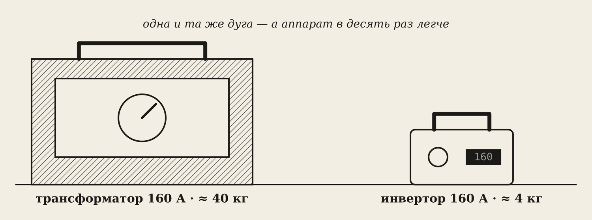
Сварочный трансформатор работает на частоте сети — 50 Гц, и ему нужен большой стальной сердечник. Инвертор сначала превращает ток сети в ток частотой около 50 000 Гц и только потом понижает напряжение. А на высокой частоте трансформатор нужен крошечный.
6. Структурная схема инвертора
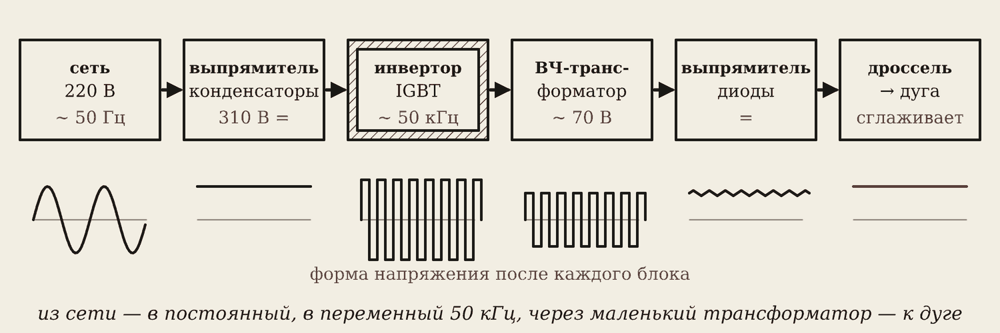
- Сеть 220 В, 50 Гц.
- Выпрямитель и конденсаторы — постоянное напряжение около 310 В (конденсатор заряжается до амплитуды: 220 · 1,41 ≈ 310).
- Инвертор на IGBT нарезает постоянное напряжение на импульсы туда-обратно — переменный ток высокой частоты (десятки кГц).
- Маленький ВЧ-трансформатор понижает напряжение до 60–70 В и даёт большой ток.
- Выходной выпрямитель снова делает ток постоянным.
- Дроссель сглаживает ток и держит дугу.
Запомните
Схему из шести блоков нарисуйте в тетрадь — это главный пункт эталона Е5.
7. Как IGBT делают переменный ток
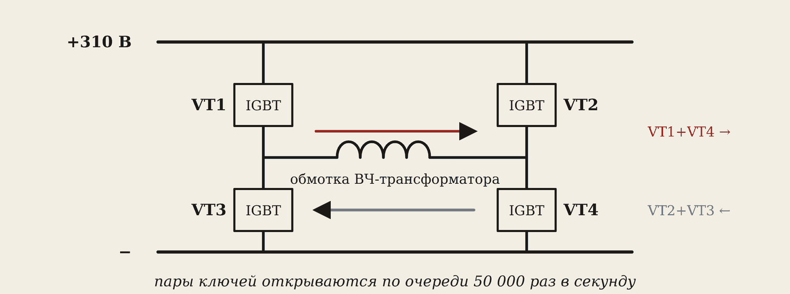
Четыре ключа стоят буквой «Н», а обмотка трансформатора — перекладина. Открыты VT1 и VT4 — ток идёт через обмотку в одну сторону. Открыты VT2 и VT3 — в другую. Пары меняются 50 000 раз в секунду — в обмотке переменный ток.
Два ключа одной «ноги» (VT1 и VT3) никогда не открываются вместе — иначе короткое замыкание, и транзисторы сгорят.
8. Зачем высокая частота
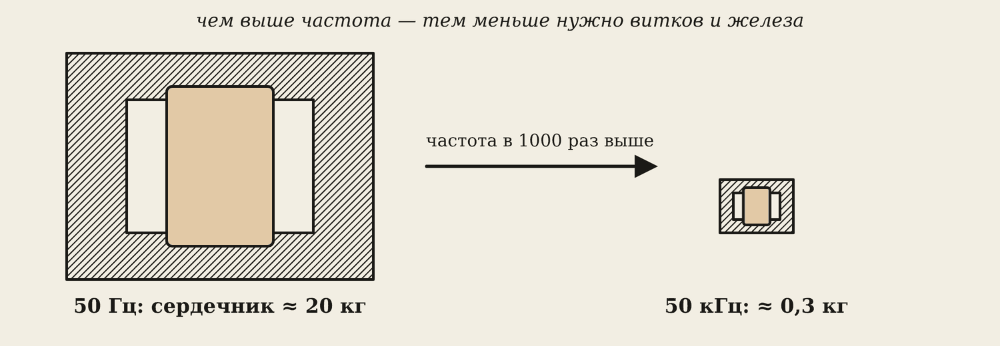
ЭДС индукции тем больше, чем быстрее меняется магнитный поток. На 50 кГц поток меняется в тысячу раз быстрее, чем на 50 Гц. Значит, для того же напряжения нужно гораздо меньше витков и железа. Сердечник делают из феррита — он не греется от вихревых токов на высокой частоте.
Частоты ниже 20 кГц человек слышит — трансформатор бы пищал. Поэтому инверторы работают на 20–100 кГц.
9. Как регулируют ток: ШИМ
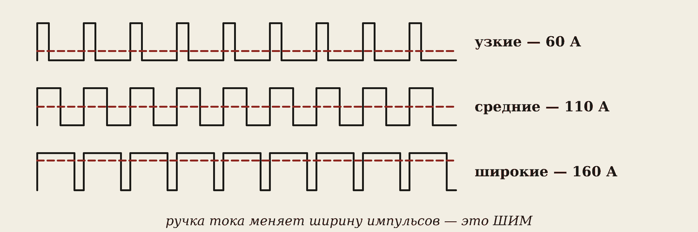
Частота не меняется — меняется ширина импульсов: сколько времени в каждом периоде ключ открыт. Узкие импульсы — маленький ток, широкие — большой. Это ШИМ — широтно-импульсная модуляция. Плата сама меряет ток дуги и подстраивает импульсы, поэтому дуга стабильная.
10. Умные функции
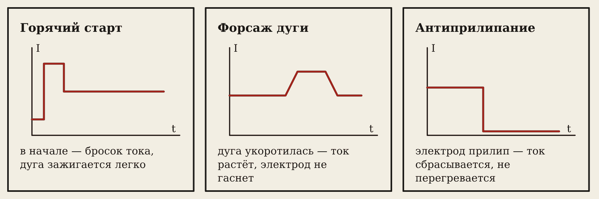
- Горячий старт — при поджиге ток больше: дуга зажигается легко.
- Форсаж дуги — дуга укоротилась, плата добавляет ток: дуга не гаснет.
- Антиприлипание — электрод прилип, ток сбрасывается: электрод не раскаляется.
11. Плюсы и минусы
| Трансформатор | Инвертор | |
|---|---|---|
| Вес на 160 А | 30–50 кг | 3–10 кг |
| Ток дуги | переменный | постоянный, стабильный |
| Регулировка | обмотка, шунт | ручка, ШИМ |
| Пыль, влага, удары | почти не боится | боится |
| Ремонт | простой | сложный |
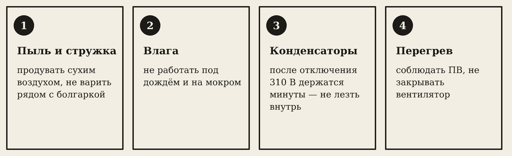
Осторожно
Конденсаторы внутри инвертора держат около 310 В ещё несколько минут после отключения. Не открывайте корпус сразу — можно получить удар.
Не ставьте инвертор рядом с болгаркой: стружка летит внутрь с воздухом вентилятора и замыкает плату. Время от времени продувайте его сухим воздухом.
Словарик
- Транзистор — прибор, в котором маленький ток или напряжение управляет большим током.
- База, коллектор, эмиттер — выводы биполярного транзистора.
- Затвор, сток, исток — выводы полевого транзистора.
- IGBT — мощный транзистор для сотен ампер, стоит в инверторах.
- Режим ключа — транзистор либо открыт, либо закрыт.
- Режим усилителя — выход повторяет вход, но больше.
- Коэффициент усиления K — во сколько раз выход больше входа.
- Инвертор — делает из постоянного тока переменный.
- ВЧ-трансформатор — маленький трансформатор на высокую частоту.
- ШИМ — регулирование ширины импульсов.
Эталоны в тетрадь
Перепишите в тетрадь по билетам — каждый эталон на отдельную страницу, с рисунком и строкой «Мой пример».
Транзисторы и усилители
Транзисторы (биполярный, полевой, IGBT) в режиме ключа и усилителя. Усилители: назначение, коэффициент усиления.
- Транзистор — полупроводниковый прибор: маленький ток или напряжение управляет большим током. Как кран: лёгким поворотом ручки управляем сильным потоком воды.
- Виды: биполярный (база, коллектор, эмиттер); полевой (затвор, сток, исток); IGBT — для больших токов и напряжений (стоит в сварочных инверторах). (Нарисуйте обозначение биполярного.)
- Режим ключа — транзистор либо полностью открыт, либо закрыт (вкл/выкл), может переключаться десятки тысяч раз в секунду. Так работает инвертор.
- Режим усилителя — выходной сигнал повторяет входной, но больше. Коэффициент усиления K = Uвых / Uвх.
- Примеры усилителей: колонка, мегафон, микрофон с усилителем.
Сварочный инвертор
Сварочный инвертор: структурная схема, преимущества перед трансформатором.
- Схема блоками: сеть 220 В → выпрямитель и конденсаторы (≈ 310 В постоянного) → инвертор на IGBT (переменный ток высокой частоты, десятки кГц) → маленький высокочастотный трансформатор → выходной выпрямитель → дроссель → дуга. (Нарисуйте.)
- Зачем высокая частота: чем выше частота, тем меньше нужен трансформатор. Поэтому инвертор весит 3–10 кг, а трансформатор той же мощности — десятки килограммов.
- Преимущества: лёгкий, экономичный, стабильная дуга, функции «горячий старт», «антиприлипание», «форсаж дуги».
- Недостатки: боится пыли, влаги и металлической стружки, сложнее в ремонте. Конденсаторы внутри остаются заряженными после отключения (см. П3).
Проверь себя
Сначала ответьте сами — в тетради или вслух. Потом нажмите на вопрос, чтобы увидеть ответ.
1Почему транзистор сравнивают с краном?
Маленький ток (поворот ручки) управляет большим током (сильным потоком).
2Как называются выводы биполярного транзистора?
База, коллектор, эмиттер.
3Какой транзистор стоит в сварочных инверторах?
IGBT.
4Почему в инверторе транзисторы работают только ключами?
Открытый и закрытый транзистор почти не греется; греется он, только когда приоткрыт.
5Uвх = 0,05 В, Uвых = 2 В. Найдите K.
K = 2 / 0,05 = 40.
6Почему внутри инвертора 310 В, если в сети 220 В?
Конденсатор заряжается до амплитуды: 220 · 1,41 ≈ 310 В.
7Зачем инвертору высокая частота?
Чем выше частота, тем меньше витков и железа нужно трансформатору — аппарат маленький и лёгкий.
8Как инвертор регулирует сварочный ток?
Меняет ширину импульсов (ШИМ).
9Почему нельзя сразу открывать отключённый инвертор?
Конденсаторы ещё несколько минут держат около 310 В.
Попробуйте в лаборатории
Откройте на телефоне или компьютере — ничего устанавливать не нужно.
Ответы к «Проверь себя»
- Маленький ток (поворот ручки) управляет большим током (сильным потоком).
- База, коллектор, эмиттер.
- IGBT.
- Открытый и закрытый транзистор почти не греется; греется он, только когда приоткрыт.
- K = 2 / 0,05 = 40.
- Конденсатор заряжается до амплитуды: 220 · 1,41 ≈ 310 В.
- Чем выше частота, тем меньше витков и железа нужно трансформатору — аппарат маленький и лёгкий.
- Меняет ширину импульсов (ШИМ).
- Конденсаторы ещё несколько минут держат около 310 В.